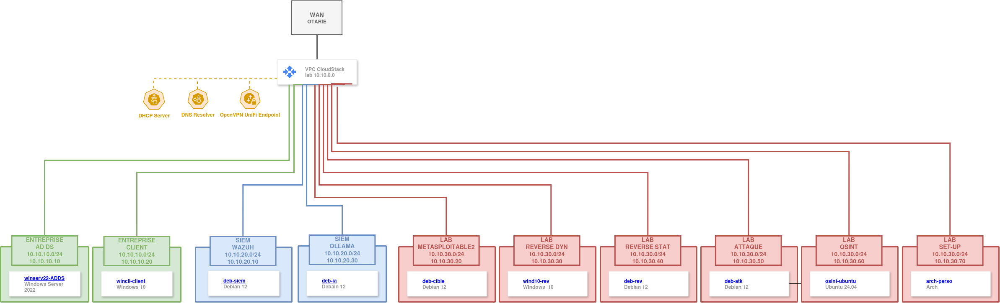
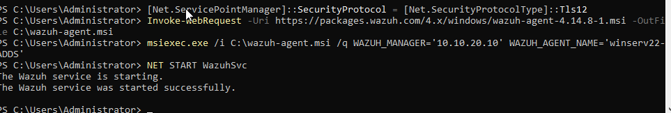
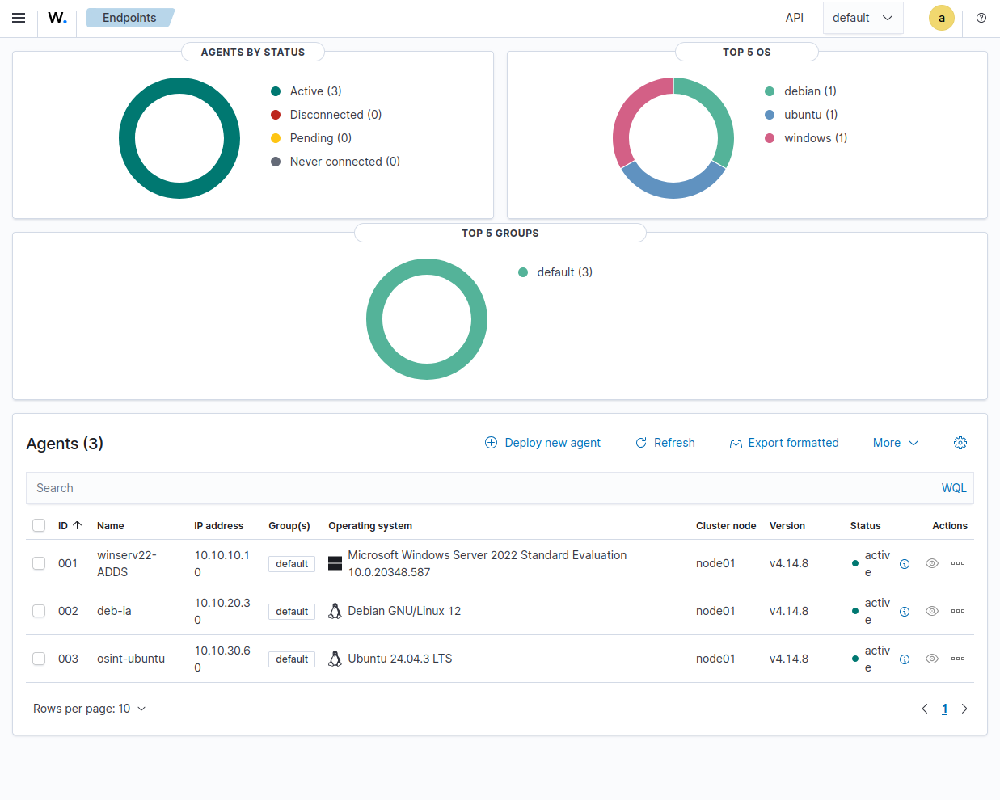

HomeLab SIEM
Centralized detection and network segmentation on Apache CloudStack: a 3-tier VPC, a hardened Active Directory and a Wazuh SIEM collecting logs from three operating systems.
TL;DR. One VPC split into three trust zones, built entirely from the command line with CloudMonkey. A Windows Server 2022 domain controller, hardened. The risky zone is isolated from the trusted zone, verified with TCP tests. Wazuh 4.14.8 runs with three active agents on Windows, Debian and Ubuntu. The final audit also lists what is not done yet.
1. Context and goals
This is a blue team project: the goal is not to attack, but to see. A SIEM (Security Information and Event Management) gathers the logs of a whole network in one place so you can spot unusual activity.
The lab was designed to show:
- Network segmentation: one VPC cut into three tiers by trust level.
- Active Directory: a real Windows Server domain controller with an OU, users and a security policy.
- Hardening: on the directory side and on the network side.
- Centralized detection: a Wazuh SIEM collecting logs from the key machines. This is the core of the project.
- A contained risky zone: offensive machines kept away from the trusted network.
Design choices
- One VPC with tiers, not several VPCs. Every segment needs to reach the SIEM in a controlled way. Separate VPCs would have blocked that.
- A real Windows Server, not Samba. To get the real Windows security logs.
- No Kali VM. Offensive tools go on a dedicated Debian VM, so I know exactly what software lives in the risky zone.
2. Architecture
A single VPC called lab (10.10.0.0/16) split into three /24 tiers. The CloudStack virtual router handles the gateway, DHCP, DNS, NAT and ACL filtering between tiers. Each tier gets its own VLAN automatically.

Segmentation logic
- Enterprise (
10.10.10.0/24): what we protect. The domain controller and a user workstation. - SIEM (
10.10.20.0/24): monitoring. It receives logs from everyone. Target rule: a collector never pivots to what it watches. Not enforced yet, see the audit. - Lab (
10.10.30.0/24): everything risky or offensive, grouped in one segment.
Platform limit. The VPC is capped at three tiers. Finer isolation, for example between reverse-engineering VMs and the target, is planned with local firewalls (nftables, Windows Firewall).
Inventory
| VM | Tier | IP | OS / role | Status |
|---|---|---|---|---|
| winserv22-ADDS | Enterprise | 10.10.10.10 | Windows Server 2022, DC + DNS | Running, agent active |
| wincli-client | Enterprise | 10.10.10.20 | Windows 10 workstation | Domain joined, no agent |
| deb-siem | SIEM | 10.10.20.10 | Debian 12, Wazuh all-in-one | Running |
| deb-ia | SIEM | 10.10.20.30 | Debian 12, monitored host | Agent active |
| deb-cible | Lab | 10.10.30.20 | Debian 12, target | Stopped |
| wind10-rev | Lab | 10.10.30.30 | Windows 10, reverse | Stopped |
| deb-rev | Lab | 10.10.30.40 | Debian 12, reverse | Stopped |
| deb-atk | Lab | 10.10.30.50 | Debian 12, attack | Stopped |
| osint-ubuntu | Lab | 10.10.30.60 | Ubuntu 24.04, OSINT | Agent active |
| arch-perso | Lab | 10.10.30.70 | Arch Linux, personal | Stopped |
Access
- CloudStack web interface through the school VPN when off campus.
- Windows VMs through the noVNC web console.
- Linux VMs through SSH with a key, exposed with port forwarding for three machines.
Limit. The port forwards have no source restriction, so they are reachable from the whole school network. Password login is disabled, but root login with a key is still allowed. The most exposed machine is deb-siem, the one that should be the best protected.
3. Active Directory
- Domain:
lab.local(NetBIOSLAB), single forest. - Domain controller:
winserv22-ADDS, AD DS + integrated DNS, static IP. - OU:
Utilisateurs, with three test users. - Client:
wincli-clientjoined to the domain. A domain user login was tested and works.
The directory is kept small on purpose: enough to produce real authentication events. There is no split yet between admin and user accounts.
4. Hardening
Active Directory
- Password policy: 12 characters minimum, complexity on, lockout after 5 failures (15 min), history of 24.
- Advanced audit: Logon/Logoff and Account Management, success and failure. The DC logs account creation (4720) and lockout (4740). A failed logon (4625) is logged on the machine where it fails; the DC only sees the Kerberos/NTLM failure (4771/4776), which is not enabled here.
- Attack surface: SMBv1 disabled.
- GPO
LAB-Durci: LLMNR disabled (abused by Responder-style attacks) and command line included in process creation events (4688). That second setting only works once the "Process Creation" audit subcategory is enabled too, which is still to do.
Network: targeted deny between risky zone and trusted zone
At first the ACLs were default_allow. Three dedicated lists (acl-entreprise, acl-siem, acl-lab) replaced it. The strategy for now: block all traffic between lab and enterprise, both ways. Other flows stay open.
| List | # | Dir. | CIDR | Action | Effect |
|---|---|---|---|---|---|
| acl-entreprise | 10 | In | 10.10.30.0/24 | Deny | Lab blocked |
| acl-entreprise | 20 | In | 0.0.0.0/0 | Allow | |
| acl-entreprise | 100 | Out | 10.10.30.0/24 | Deny | To lab blocked |
| acl-entreprise | 200 | Out | 0.0.0.0/0 | Allow | |
| acl-siem | 10 | In | 0.0.0.0/0 | Allow | No filtering |
| acl-siem | 100 | Out | 0.0.0.0/0 | Allow | No filtering |
| acl-lab | 10 | In | 0.0.0.0/0 | Allow | |
| acl-lab | 100 | Out | 10.10.10.0/24 | Deny | To enterprise blocked |
| acl-lab | 200 | Out | 0.0.0.0/0 | Allow | Internet open |
Proving the isolation
A ping is not enough: Windows Server drops incoming ICMP by default, so the ping would fail even without the ACL. I tested TCP connections to the ports the DC really listens on, from osint-ubuntu in the lab tier:
# from osint-ubuntu (lab tier)
DC:53 closed/filtered DC:88 closed/filtered DC:135 closed/filtered
DC:389 closed/filtered DC:445 closed/filtered DC:3389 closed/filtered
DC:5985 closed/filtered
client:445 closed/filtered client:3389 closed/filtered
# counter-test from deb-siem (SIEM tier, not filtered)
10.10.10.10:445 OPENThe counter-test is what matters: port 445 answers from the SIEM tier but not from the lab tier. So the block comes from the ACL, not from the Windows firewall.
5. Wazuh SIEM
Wazuh 4.14.8, all-in-one on deb-siem: manager (collection and correlation), indexer (storage and search) and dashboard on one machine. Installed with the official script. The dashboard is served over HTTPS on port 443.
/var/ossec/bin/wazuh-control status # main services running
/var/ossec/bin/wazuh-control info # version 4.14.8Sizing. 4 vCPU, 4 GB RAM, 40 GB disk. Indexer Java heap set to 1 GB. During the audit only about 120 MB of RAM was free, with no swap. No out-of-memory crash in seven days, but the margin is close to zero.
6. Agents and log collection
Each monitored machine runs an agent that sends its logs to the manager over TCP 1514/1515.
| ID | Agent | System | Telemetry |
|---|---|---|---|
| 001 | winserv22-ADDS | Windows Server 2022 | Security event log (AD events) |
| 002 | deb-ia | Debian 12 | Linux system logs |
| 003 | osint-ubuntu | Ubuntu 24.04 | Linux system logs |
Three of the ten machines are monitored. wincli-client and deb-cible don't have an agent yet.

Result: three active agents
The manager shows three agents Active on three OS, none disconnected. Collection works: on October 12 the alerts file had 2,393 alerts from the DC, 3,311 from osint-ubuntu, 215 from deb-ia and 231 from the manager itself.

Collecting Windows security logs
On the DC, the agent reads the Windows Security channel. Without it, AD authentication events never reach the SIEM:
<ossec_config>
<client>
<server>
<address>10.10.20.10</address>
</server>
</client>
<localfile>
<location>Security</location>
<log_format>eventchannel</log_format>
</localfile>
</ossec_config>Problem I hit. My first config put the collection block after the closing </ossec_config> tag. The XML was invalid and the DC agent showed "disconnected". Switching the ACL on and off ruled out the network, which pointed to the config file. A clean ossec.conf and a service restart brought the agent back to Active.
7. What the SIEM actually sees
| Source | Seen in the SIEM | Configured, not seen yet |
|---|---|---|
| winserv22-ADDS | Windows logons and logoffs, 2,393 alerts in a day | Account creation (4720), lockout (4740), local failed logon (4625) |
| deb-ia | Linux system and auth logs (215 alerts) | |
| osint-ubuntu | Linux system and auth logs (3,311 alerts) |
The collection chain works end to end for successful authentication. No "abnormal" event (failure, lockout, account creation) has been triggered yet to prove detection. That's the first fix on the list.
8. Problems and fixes
| Problem | Cause | Fix |
|---|---|---|
| DC agent disconnected | Invalid ossec.conf | Rewrote a clean file, restarted the service |
| Disk full on deb-siem | Initial volume too small (3 GB) | cmk resize volume, then growpart + resize2fs (40 GB) |
| Wazuh install stuck | APT lock (unattended-upgrades) | Stopped APT timers, dpkg --configure -a, resumed |
| Windows agent download: 403 | TLS negotiation | Forced TLS 1.2 before the request |
| Broken PowerShell paste | UK keyboard in the noVNC console | Short commands, no fragile characters |
| Linux agent: missing GPG key | Minimal Debian template | Installed gnupg and curl first |
| vCPU quota full (20/20) | All VMs at 2 to 4 vCPU | Scaled one VM down with cmk scale |
9. Audit of the real state
Before handing in the report, I audited the lab read-only: cmk for the platform, SSH for the Linux VMs, TCP tests between tiers.
Confirmed
- Three-tier VPC, each tier with its own ACL list.
- Lab ↔ enterprise isolation, both ways, checked with TCP and a counter-test.
- Wazuh running, three active agents on three OS, thousands of alerts a day.
- SSH key-only on the reachable Linux VMs.
Gaps
| Finding | Evidence | Severity |
|---|---|---|
| SIEM tier not filtered: it can reach the enterprise and lab tiers | acl-siem allows all; DC:445 and osint:22 open from the SIEM tier | High |
| The risky zone can reach the SIEM's SSH and dashboard | From osint-ubuntu: siem:22 and siem:443 open | High |
| The risky zone has full Internet access | acl-lab rule 200; outbound HTTPS works | High |
| Admin access with no source restriction | Port forwards without CIDR | Medium |
| osint-ubuntu disk almost full | 2.4 GB, 98% used | Medium |
| No Linux hardening | No nftables, auditd off, root allowed with a key | Medium |
| deb-siem RAM very tight | 120 MB free, no swap | Medium |
| Detection of abnormal events not proven | No 4625/4720/4740 in the day's alerts | Medium |
| No custom detection rule | local_rules.xml only has the default example | Low |
10. Next steps
Priority fixes
- Filter the SIEM tier: only accept agent ports (1514-1515) from the VPC, and admin (22, 443) from the admin workstation only. Block the SIEM from opening connections to other tiers with a stateful local firewall, so the "collector never pivots" rule is real.
- Lock down the risky zone: replace the general outbound allow in
acl-labwith a deny, and only open agent ports to the SIEM. - Restrict port forwards to the admin workstation and disable root login.
- Grow the osint-ubuntu disk and add swap or RAM to deb-siem.
- Prove detection: trigger failed logins until a lockout, create a test account, and show the 4625/4740/4720 alerts in the dashboard. Deploy an agent on wincli-client to collect 4625.
Later
- SSH bastion (ProxyJump) instead of direct port forwards.
- Wazuh active response: ban an IP on brute force.
- Custom detection rules and MITRE ATT&CK mapping.
- Infrastructure as Code: tiers, ACLs and VMs in OpenTofu, configuration in Ansible.
- A second domain controller and scheduled snapshots.
- A Linux hardening baseline (nftables, auditd) on every VM.
Conclusion
- Segmented architecture: mostly done. Three tiers by trust level, lab ↔ enterprise isolation verified. The SIEM tier is still open.
- Enterprise environment: done. A working, hardened Active Directory.
- Network isolation: partial. The targeted deny works, but the risky zone still has Internet and can reach the SIEM.
- Centralized detection: collection done, detection still to prove.
Most of what I learned came from the friction: quotas, system locks, broken configs, console limits, and finding the cause of each one step by step. The final audit is part of the same mindset. In blue team work, measuring the gap between what you think you deployed and what is really running is part of the job.